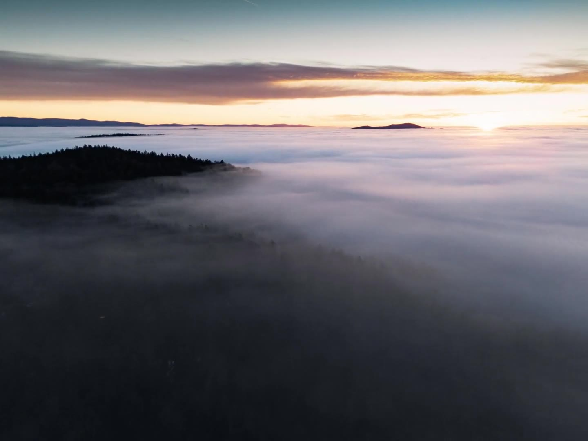

Ein Feuerwerk, das nicht klappte — und Lichtspuren daraus.
01.02 · Foto
Seoul bei Tag
Tempel, Berge, Regen und eine Stadt ohne Ende.
01.03 · Foto
Menschen
85 mm, offene Blende, kein Blitz.
01.04 · Foto
Sonnenaufgänge
Früher raus als vernünftig — die Donau im Nebel.
01.05 · Foto
Tiere
Nichts absprechen, nichts wiederholen.
VIDEO & DROHNE
02
Video & Drohne
Doku, Imagefilm, Werbung, FPV
5 Projekte — seitlich scrollen →
folgt
02.01 · Video & Drohne
Unter Tage
Doku im Graphitbergwerk Kropfmühl, 200 m tief.
folgt
02.02 · Video & Drohne
Personenporträt
Ein Pfarrer, ein Tag, eine Kamera.
folgt
02.03 · Video & Drohne
Imagefilm
Gedreht mit der ARRI Alexa Mini.
folgt
02.04 · Video & Drohne
Werbespot Elektrotechnik
Spot für den eigenen Studiengang.

02.05 · Video & Drohne
Drohne
FPV und cinematisch — Showreel und Zeitraffer.
DESIGN & 3D
03
Design & 3D
Print, Plakat, Produkt, Animation
4 Projekte — seitlich scrollen →
03.01 · Design & 3D
Flyer
Typografie, Layout und Bild aus einer Hand.
folgt
03.02 · Design & 3D
Politische Plakate
Plakatserie, Print.
folgt
03.03 · Design & 3D
Produktentwurf
Apple-artiges Gerät — entworfen und 3D modelliert.
folgt
03.04 · Design & 3D
Therme Bad Füssing
Unterwasser-Animation auf die Beckenwand projiziert.
Entwurf B · Reihen — jeder Bereich eine waagerechte Reihe, die man seitwärts durchschiebt. Die ganze Seite ist damit nur noch gut zwei Bildschirme hoch.